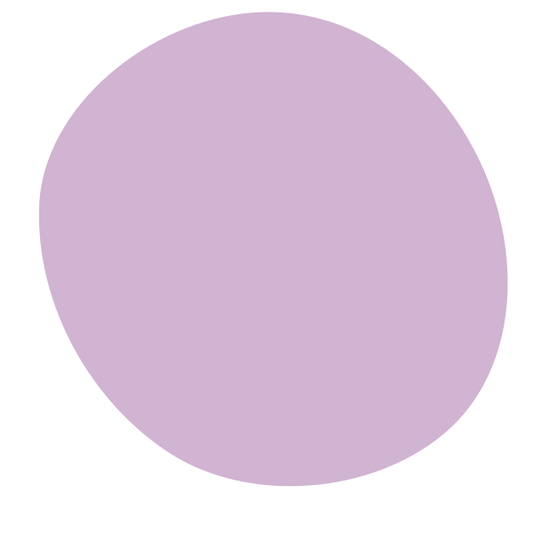
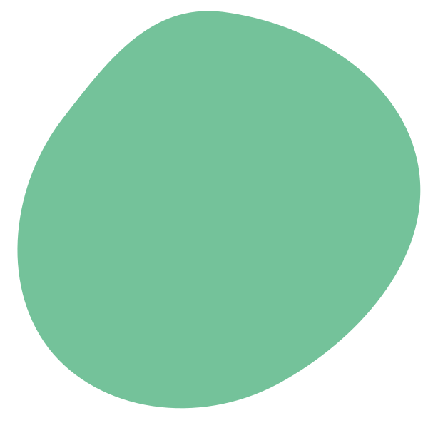

Harmonize
Cinco queijos brasileiros e o que abrir com cada um
Do canastra curado ao coalho fresco — e por que o espumante resolve quase tudo.
Descubra + Compartilhe + Viva +


Descubra o vinho
Uvas, harmonizações, destinos, verbetes do almanaque — tudo em um só lugar.
Matéria de capa · Viaje
Seis vinícolas, duas estradas de terra e uma regra: nenhuma degustação antes das dez. Um guia para quem quer entender o vale, não só brindar nele.
Agora no portal
Harmonize
Do canastra curado ao coalho fresco — e por que o espumante resolve quase tudo.
Saúde & Ciência
Três estudos recentes, lidos sem manchete: onde há consenso e onde não há.
Curiosidades
A resposta envolve pulmão de vidreiro, barris ingleses e uma boa dose de acaso.
enoturismo, estradas e vinícolas para visitar
Destaque
Uco é lindo, mas a Argentina do vinho não termina ali. Subimos até 1.700 metros para provar malbecs que quase não saem da província.
Consulta permanente
Mais de 400 verbetes explicando uvas, técnicas, regiões e aquele termo que o sommelier falou rápido demais.
Abrir o Almanaqueo que abrir com o que
Spoiler: o tinto pesado perde para um espumante rosé — e explicamos por quê.
safras, preços e quem compra o quê
Volume cai 4%, ticket médio sobe 11%: o retrato de um consumo mais curioso.
Programe-se